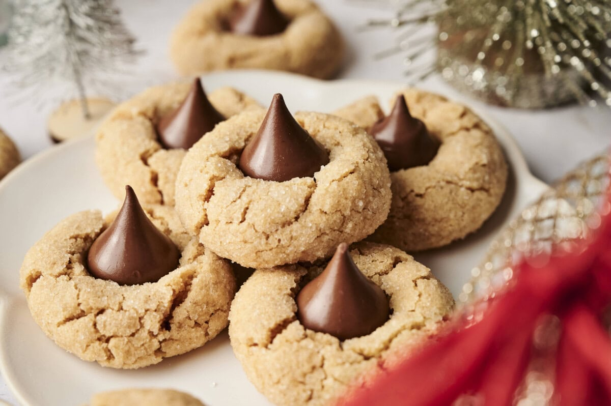

This recipe is for a delectable treat for any time of the year but especially great around the holidays! The combination of peanut butter and chocolate kisses is one of my favorite food combos out there. Make sure to add a little extra sugar on the top to get maximum sweetness! Please enjoy this recipe with the people you love.
This recipe was copied from the recipe on the Allrecipes website. Please refer to that page for any questions regarding the recipe as well as additional suggestions.
Preheat the oven to 350 degrees F (175 degrees C).
Stir sugar, peanut butter, and egg together in a large bowl until well combined.
Shape dough into 1-inch balls. If dough is too sticky, refrigerate until easy to handle, about 30 minutes.
Place dough balls on an ungreased cookie sheet.
Bake in the preheated oven until edges are set and tops are slightly cracked, about 10 minutes.
Press a cookie kiss into center of each warm cookie. Remove to a wire rack to cool.